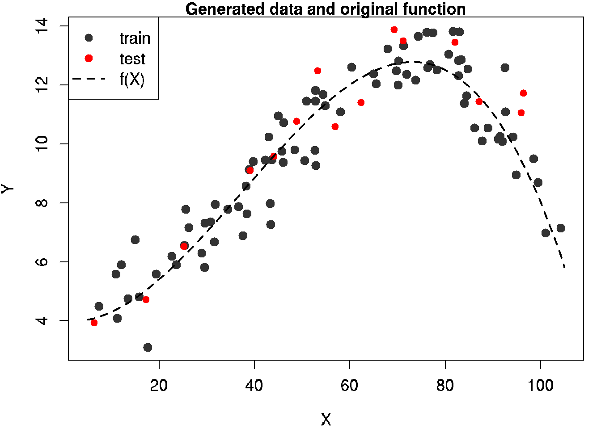

Chapter 31 Tree-based models
Classification and regression trees (CART) are a non-parametric decision tree learning technique that produces either classification or regression trees, depending on whether the dependent variable is categorical or numeric, respectively.
CART is both a generic term to describe tree algorithms and also a specific name for Breiman’s original algorithm for constructing classification and regression trees.
- Decision Tree: A tree-shaped graph or model of decisions used to determine a course of action or show a statistical probability.
- Classification Tree: A decision tree that performs classification (predicts a categorical response).
- Regression Tree: A decision tree that performs regression (predicts a numeric response).
- Split Point: A split point occurs at each node of the tree where a decision is made (e.g. x > 7 vs. x ≤ 7).
- Terminal Node: A terminal node is a node which has no descendants (child nodes). Also called a “leaf node.”
Properties of Trees
* Can handle huge datasets.
* Can handle mixed predictors implicitly – numeric and categorical.
* Easily ignore redundant variables.
* Handle missing data elegantly through surrogate splits.
* Small trees are easy to interpret.
* Large trees are hard to interpret.
* Prediction performance is often poor (high variance).
Tree Algorithms
There are a handful of different tree algorithms in addition to Breiman’s original CART algorithm. Namely, ID3, C4.5 and C5.0, all created by Ross Quinlan. C5.0 is an improvement over C4.5, however, the C4.5 algorithm is still quite popular since the multi-threaded version of C5.0 is proprietary (although the single threaded is released as GPL).
CART vs C4.5
Here are some of the differences between CART and C4.5:
- Tests in CART are always binary, but C4.5 allows two or more outcomes.
- CART uses the Gini diversity index to rank tests, whereas C4.5 uses information-based criteria.
- CART prunes trees using a cost-complexity model whose parameters are estimated by cross-validation; C4.5 uses a single-pass algorithm derived from binomial confidence limits.
- With respect to missing data, CART looks for surrogate tests that approximate the outcomes when the tested attribute has an unknown value, but C4.5 apportions the case probabilistically among the outcomes.
Decision trees are formed by a collection of rules based on variables in the modeling data set:
- Rules based on variables’ values are selected to get the best split to differentiate observations based on the dependent variable.
- Once a rule is selected and splits a node into two, the same process is applied to each “child” node (i.e. it is a recursive procedure).
- Splitting stops when CART detects no further gain can be made, or some pre-set stopping rules are met. (Alternatively, the data are split as much as possible and then the tree is later pruned.)
Each branch of the tree ends in a terminal node. Each observation falls into one and exactly one terminal node, and each terminal node is uniquely defined by a set of rules.
31.1 Classification Tree example
Let’s use the data frame kyphosis to predict a type of deformation (kyphosis) after surgery, from age in months (Age), number of vertebrae involved (Number), and the highest vertebrae operated on (Start).
# Classification Tree with rpart
library(rpart)
# grow tree
fit <- rpart(Kyphosis ~ Age + Number + Start,
method="class", data=kyphosis)
printcp(fit) # display the results##
## Classification tree:
## rpart(formula = Kyphosis ~ Age + Number + Start, data = kyphosis,
## method = "class")
##
## Variables actually used in tree construction:
## [1] Age Start
##
## Root node error: 17/81 = 0.20988
##
## n= 81
##
## CP nsplit rel error xerror xstd
## 1 0.176471 0 1.00000 1.0000 0.21559
## 2 0.019608 1 0.82353 1.1176 0.22433
## 3 0.010000 4 0.76471 1.1176 0.22433plotcp(fit) # visualize cross-validation results
summary(fit) # detailed summary of splits## Call:
## rpart(formula = Kyphosis ~ Age + Number + Start, data = kyphosis,
## method = "class")
## n= 81
##
## CP nsplit rel error xerror xstd
## 1 0.17647059 0 1.0000000 1.000000 0.2155872
## 2 0.01960784 1 0.8235294 1.117647 0.2243268
## 3 0.01000000 4 0.7647059 1.117647 0.2243268
##
## Variable importance
## Start Age Number
## 64 24 12
##
## Node number 1: 81 observations, complexity param=0.1764706
## predicted class=absent expected loss=0.2098765 P(node) =1
## class counts: 64 17
## probabilities: 0.790 0.210
## left son=2 (62 obs) right son=3 (19 obs)
## Primary splits:
## Start < 8.5 to the right, improve=6.762330, (0 missing)
## Number < 5.5 to the left, improve=2.866795, (0 missing)
## Age < 39.5 to the left, improve=2.250212, (0 missing)
## Surrogate splits:
## Number < 6.5 to the left, agree=0.802, adj=0.158, (0 split)
##
## Node number 2: 62 observations, complexity param=0.01960784
## predicted class=absent expected loss=0.09677419 P(node) =0.7654321
## class counts: 56 6
## probabilities: 0.903 0.097
## left son=4 (29 obs) right son=5 (33 obs)
## Primary splits:
## Start < 14.5 to the right, improve=1.0205280, (0 missing)
## Age < 55 to the left, improve=0.6848635, (0 missing)
## Number < 4.5 to the left, improve=0.2975332, (0 missing)
## Surrogate splits:
## Number < 3.5 to the left, agree=0.645, adj=0.241, (0 split)
## Age < 16 to the left, agree=0.597, adj=0.138, (0 split)
##
## Node number 3: 19 observations
## predicted class=present expected loss=0.4210526 P(node) =0.2345679
## class counts: 8 11
## probabilities: 0.421 0.579
##
## Node number 4: 29 observations
## predicted class=absent expected loss=0 P(node) =0.3580247
## class counts: 29 0
## probabilities: 1.000 0.000
##
## Node number 5: 33 observations, complexity param=0.01960784
## predicted class=absent expected loss=0.1818182 P(node) =0.4074074
## class counts: 27 6
## probabilities: 0.818 0.182
## left son=10 (12 obs) right son=11 (21 obs)
## Primary splits:
## Age < 55 to the left, improve=1.2467530, (0 missing)
## Start < 12.5 to the right, improve=0.2887701, (0 missing)
## Number < 3.5 to the right, improve=0.1753247, (0 missing)
## Surrogate splits:
## Start < 9.5 to the left, agree=0.758, adj=0.333, (0 split)
## Number < 5.5 to the right, agree=0.697, adj=0.167, (0 split)
##
## Node number 10: 12 observations
## predicted class=absent expected loss=0 P(node) =0.1481481
## class counts: 12 0
## probabilities: 1.000 0.000
##
## Node number 11: 21 observations, complexity param=0.01960784
## predicted class=absent expected loss=0.2857143 P(node) =0.2592593
## class counts: 15 6
## probabilities: 0.714 0.286
## left son=22 (14 obs) right son=23 (7 obs)
## Primary splits:
## Age < 111 to the right, improve=1.71428600, (0 missing)
## Start < 12.5 to the right, improve=0.79365080, (0 missing)
## Number < 3.5 to the right, improve=0.07142857, (0 missing)
##
## Node number 22: 14 observations
## predicted class=absent expected loss=0.1428571 P(node) =0.1728395
## class counts: 12 2
## probabilities: 0.857 0.143
##
## Node number 23: 7 observations
## predicted class=present expected loss=0.4285714 P(node) =0.08641975
## class counts: 3 4
## probabilities: 0.429 0.571# plot tree
plot(fit, uniform=TRUE,
main="Classification Tree for Kyphosis")
text(fit, use.n=TRUE, all=TRUE, cex=.8)
# create attractive postscript plot of tree
post(fit, title = "Classification Tree for Kyphosis")
# prune the tree
pfit<- prune(fit, cp=fit$cptable[which.min(fit$cptable[,"xerror"]),"CP"])
# plot the pruned tree
#FIXME: pfit is not a tree just a root error
#plot(pfit, uniform=TRUE,
# main="Pruned Classification Tree for Kyphosis")
#text(pfit, use.n=TRUE, all=TRUE, cex=.8)
#post(pfit, file = "c:/ptree.ps",
# title = "Pruned Classification Tree for Kyphosis")31.2 Regression Tree example
# Regression Tree Example
library(rpart)
# grow tree
fit <- rpart(Mileage~Price + Country + Reliability + Type,
method="anova", data=cu.summary)
printcp(fit) # display the results##
## Regression tree:
## rpart(formula = Mileage ~ Price + Country + Reliability + Type,
## data = cu.summary, method = "anova")
##
## Variables actually used in tree construction:
## [1] Price Type
##
## Root node error: 1354.6/60 = 22.576
##
## n=60 (57 observations deleted due to missingness)
##
## CP nsplit rel error xerror xstd
## 1 0.622885 0 1.00000 1.03257 0.175924
## 2 0.132061 1 0.37711 0.53199 0.105050
## 3 0.025441 2 0.24505 0.36948 0.082559
## 4 0.011604 3 0.21961 0.36433 0.077849
## 5 0.010000 4 0.20801 0.37518 0.080670plotcp(fit) # visualize cross-validation results
summary(fit) # detailed summary of splits## Call:
## rpart(formula = Mileage ~ Price + Country + Reliability + Type,
## data = cu.summary, method = "anova")
## n=60 (57 observations deleted due to missingness)
##
## CP nsplit rel error xerror xstd
## 1 0.62288527 0 1.0000000 1.0325697 0.17592351
## 2 0.13206061 1 0.3771147 0.5319912 0.10505027
## 3 0.02544094 2 0.2450541 0.3694811 0.08255880
## 4 0.01160389 3 0.2196132 0.3643252 0.07784854
## 5 0.01000000 4 0.2080093 0.3751818 0.08066999
##
## Variable importance
## Price Type Country
## 48 42 10
##
## Node number 1: 60 observations, complexity param=0.6228853
## mean=24.58333, MSE=22.57639
## left son=2 (48 obs) right son=3 (12 obs)
## Primary splits:
## Price < 9446.5 to the right, improve=0.6228853, (0 missing)
## Type splits as LLLRLL, improve=0.5044405, (0 missing)
## Reliability splits as LLLRR, improve=0.1263005, (11 missing)
## Country splits as --LRLRRRLL, improve=0.1243525, (0 missing)
## Surrogate splits:
## Type splits as LLLRLL, agree=0.950, adj=0.750, (0 split)
## Country splits as --LLLLRRLL, agree=0.833, adj=0.167, (0 split)
##
## Node number 2: 48 observations, complexity param=0.1320606
## mean=22.70833, MSE=8.498264
## left son=4 (23 obs) right son=5 (25 obs)
## Primary splits:
## Type splits as RLLRRL, improve=0.43853830, (0 missing)
## Price < 12154.5 to the right, improve=0.25748500, (0 missing)
## Country splits as --RRLRL-LL, improve=0.13345700, (0 missing)
## Reliability splits as LLLRR, improve=0.01637086, (10 missing)
## Surrogate splits:
## Price < 12215.5 to the right, agree=0.812, adj=0.609, (0 split)
## Country splits as --RRLRL-RL, agree=0.646, adj=0.261, (0 split)
##
## Node number 3: 12 observations
## mean=32.08333, MSE=8.576389
##
## Node number 4: 23 observations, complexity param=0.02544094
## mean=20.69565, MSE=2.907372
## left son=8 (10 obs) right son=9 (13 obs)
## Primary splits:
## Type splits as -LR--L, improve=0.515359600, (0 missing)
## Price < 14962 to the left, improve=0.131259400, (0 missing)
## Country splits as ----L-R--R, improve=0.007022107, (0 missing)
## Surrogate splits:
## Price < 13572 to the right, agree=0.609, adj=0.1, (0 split)
##
## Node number 5: 25 observations, complexity param=0.01160389
## mean=24.56, MSE=6.4864
## left son=10 (14 obs) right son=11 (11 obs)
## Primary splits:
## Price < 11484.5 to the right, improve=0.09693168, (0 missing)
## Reliability splits as LLRRR, improve=0.07767167, (4 missing)
## Type splits as L--RR-, improve=0.04209834, (0 missing)
## Country splits as --LRRR--LL, improve=0.02201687, (0 missing)
## Surrogate splits:
## Country splits as --LLLL--LR, agree=0.80, adj=0.545, (0 split)
## Type splits as L--RL-, agree=0.64, adj=0.182, (0 split)
##
## Node number 8: 10 observations
## mean=19.3, MSE=2.21
##
## Node number 9: 13 observations
## mean=21.76923, MSE=0.7928994
##
## Node number 10: 14 observations
## mean=23.85714, MSE=7.693878
##
## Node number 11: 11 observations
## mean=25.45455, MSE=3.520661# create additional plots
par(mfrow=c(1,2)) # two plots on one page
rsq.rpart(fit) # visualize cross-validation results ##
## Regression tree:
## rpart(formula = Mileage ~ Price + Country + Reliability + Type,
## data = cu.summary, method = "anova")
##
## Variables actually used in tree construction:
## [1] Price Type
##
## Root node error: 1354.6/60 = 22.576
##
## n=60 (57 observations deleted due to missingness)
##
## CP nsplit rel error xerror xstd
## 1 0.622885 0 1.00000 1.03257 0.175924
## 2 0.132061 1 0.37711 0.53199 0.105050
## 3 0.025441 2 0.24505 0.36948 0.082559
## 4 0.011604 3 0.21961 0.36433 0.077849
## 5 0.010000 4 0.20801 0.37518 0.080670
# plot tree
plot(fit, uniform=TRUE,
main="Regression Tree for Mileage ")
text(fit, use.n=TRUE, all=TRUE, cex=.8)
# create attractive postcript plot of tree
post(fit, file = "tree2.ps",
title = "Regression Tree for Mileage ")
# prune the tree
pfit<- prune(fit, cp=0.01160389) # from cptable 
# plot the pruned tree
plot(pfit, uniform=TRUE,
main="Pruned Regression Tree for Mileage")
text(pfit, use.n=TRUE, all=TRUE, cex=.8)
post(pfit, file = "ptree2.ps",
title = "Pruned Regression Tree for Mileage")Sources
Tree-Based Models at Quick-R by datacamp
UseR! Machine Learnign Turorial